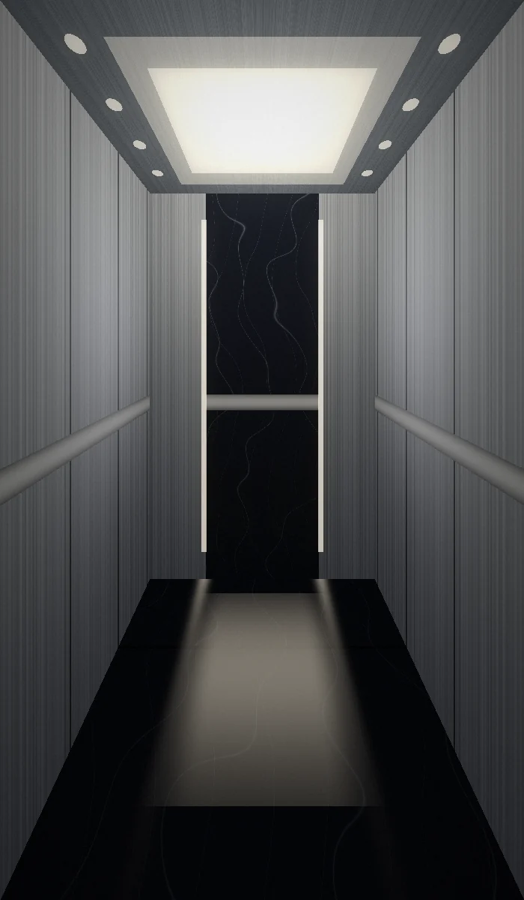
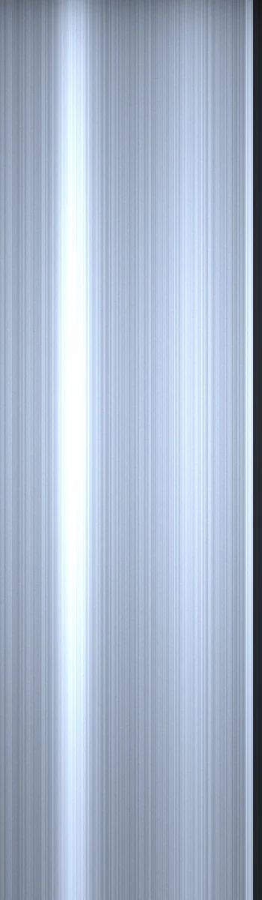
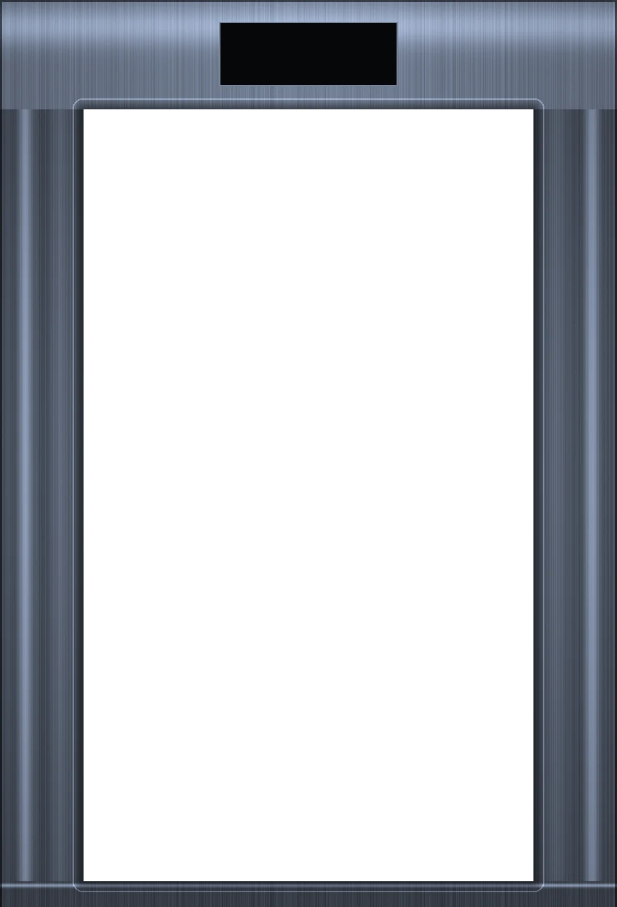
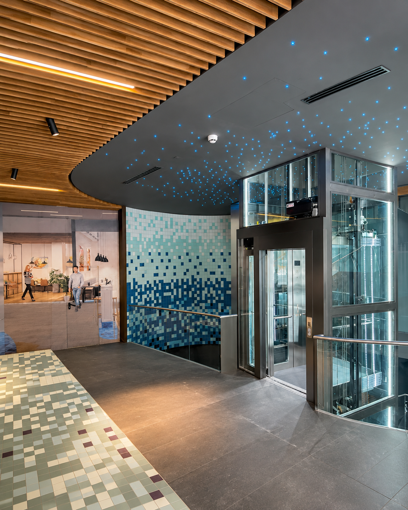
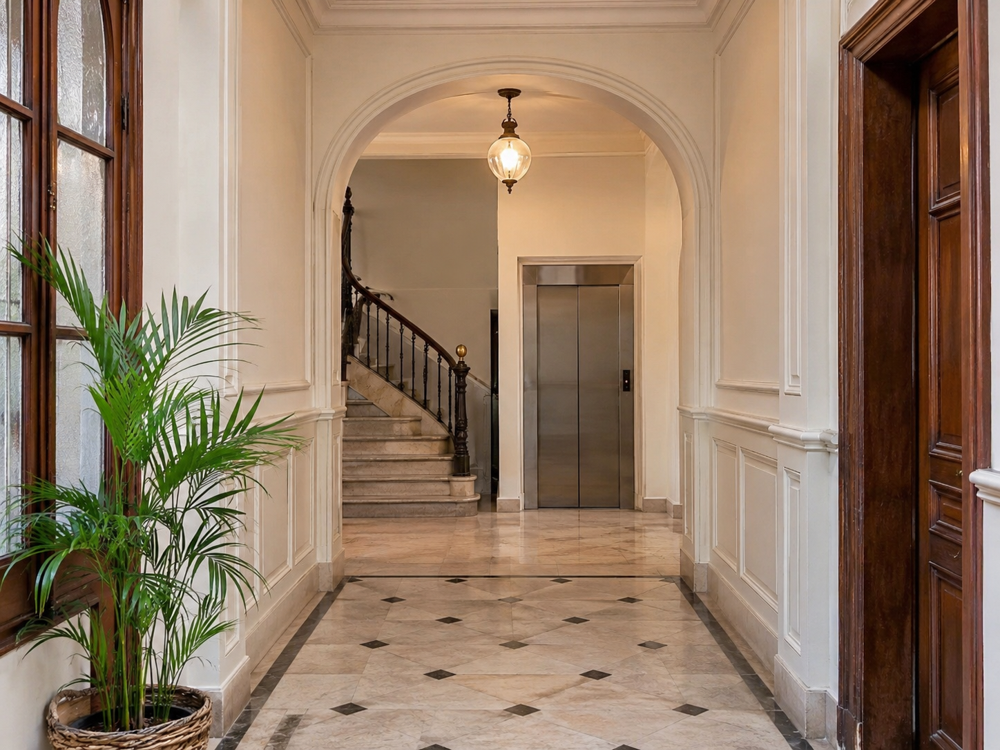
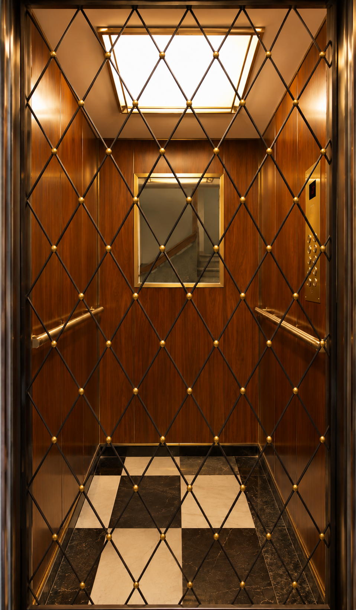
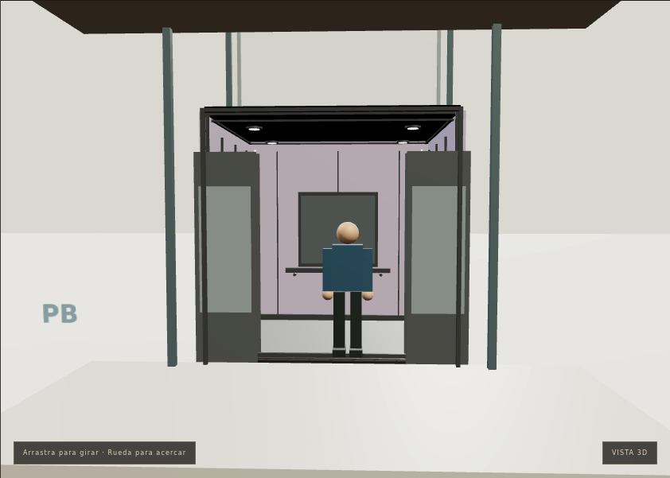
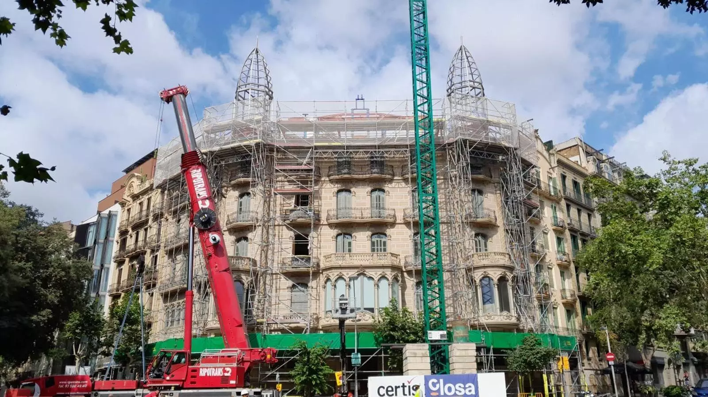

PRECISIÓN TÉCNICA
Cada intervención se planifica y se ejecuta con criterio técnico y según la normativa vigente.
ABELIFT · ASCENSORES EN BARCELONA
Abelift es Experiencia, confianza, precisión, seguridad, innovación, compromiso, calidad y cercanía.
Mantenimiento, modernización, reparación e instalación de ascensores. Soluciones técnicas con atención al detalle.
Presupuesto en 72 horas



Cada edificio tiene sus propias necesidades. Cada ascensor, su historia.
En ABELIFT trabajamos en soluciones de elevación que combinan funcionalidad, seguridad, actualización técnica y cuidado estético.
Conoce cómo podemos ayudarte
Cada intervención se planifica y se ejecuta con criterio técnico y según la normativa vigente.
Acabados, iluminación y materiales cuidados para que el ascensor encaje con tu edificio.
Estudiamos cada caso para proponerte la solución que realmente necesita tu comunidad.
02 / QUÉ HACEMOS
Acompañamos las distintas etapas de vida de un ascensor: desde su instalación y mantenimiento hasta su renovación.
Seguimiento y conservación de ascensores para mantener sus instalaciones en condiciones adecuadas de funcionamiento.
ConsultarActualización de componentes y renovación de instalaciones para responder a las necesidades actuales del edificio.
ConsultarIntervenciones y soluciones técnicas para incidencias y elementos que requieren reparación.
ConsultarSoluciones de elevación para nuevos proyectos, valorando las características y necesidades de cada espacio.
ConsultarSoluciones de elevación para mercancías, adaptadas al uso y a las necesidades de cada instalación.
ConsultarAsistencia técnica y valoración de las actuaciones necesarias tras una inspección de Industria.
Conocer másVESTÍBULOS Y ZONAS COMUNES
La entrada de tu edificio también cuenta. Renovamos el vestíbulo para que esté a la altura de su ascensor: más luminoso, más cuidado y más funcional.
Consultar vestíbulos
Ilustración orientativa de un vestíbulo.
Ilustración orientativa de una cabina clásica.
03 / RESTAURACIÓN Y PATRIMONIO
La renovación de un ascensor también puede respetar el carácter original del edificio. Madera, puertas, rejas y detalles ornamentales forman parte de una manera especial de entender la elevación.
04 / CONFIGURADOR 3D
Elige los materiales, la iluminación y los detalles. Explora tu diseño en 3D y descubre cómo se ve en movimiento.
Diseñar mi ascensorPersonaliza · Explora · Mira el recorrido

CONFIGURADOR 3D · VISTA EN MOVIMIENTO05 / NUESTROS PROYECTOS
Instalación, modernización y restauración de ascensores. Cada proyecto responde a un espacio y a unas necesidades.

CASA ENRIC LLORENS · REHABILITACIÓN EN CURSO
La madera, las rejas y los detalles de una cabina forman parte de la identidad del edificio. Una mirada a la rehabilitación de ascensores patrimoniales.
Pronto podrás descubrir aquí fotografías y detalles de nuestros trabajos.
Cuéntanos tu proyecto06 / INSPECCIONES
¿Tu comunidad ha recibido un acta de inspección? Te ayudamos a entender las actuaciones necesarias y a valorar la adaptación del ascensor.
Asistencia en inspecciones y corrección de deficiencias, teniendo en cuenta el RD 355/2024 y la ITC AEM 1 vigente. Las inspecciones reglamentarias las realiza un organismo de control habilitado.
Consultar mi acta de inspección07 / OPINIONES
Una selección de opiniones de nuestros clientes en Google.
Reseñas en su idioma original.
Este mes de julio instalaron el ascensor en nuestro edificio de Sant Gervasi (Barcelona) y la experiencia ha sido francamente positiva. Hemos comentado entre los vecinos que ha sido un trabajo muy bien ejecutad…
Excelente servicio , no podíamos estar más contentos. Vivimos en una comunidad con varias personas mayores y desde que cambiamos a Abelift el ascensor siempre está en funcionamiento correcto. ¡Gracias !
Vivimos en finca con gente muy mayor y nos hemos cambiando a abelift y muy contentos, el chico que viene muy atento y servicial siempre y el ascensor que es muy viejo desde que estamos con ellos a rejuvenecido …
Empresa muy comprometida con sus clientes y mucha experiencia en el sector
Muy satisfactoria x la seriedad y x como lo dejarón d limpio,ya q trabajarón a buen ritmo osea eficaces en lo que tenian q hacer,muy contento ha quedado la comunidad
NUESTRA ZONA DE SERVICIO
Barcelona y toda el área metropolitana.
Vallès Occidental y Vallès Oriental.
08 / CONTACTO
Presupuesto en 72 horas
Cuéntanos qué necesita tu edificio.
Ver ABELIFT en el mapa 936 80 48 01info@abelift.catCarrer de Miquel Àngel, 88
Sants-Montjuïc · 08028 Barcelona